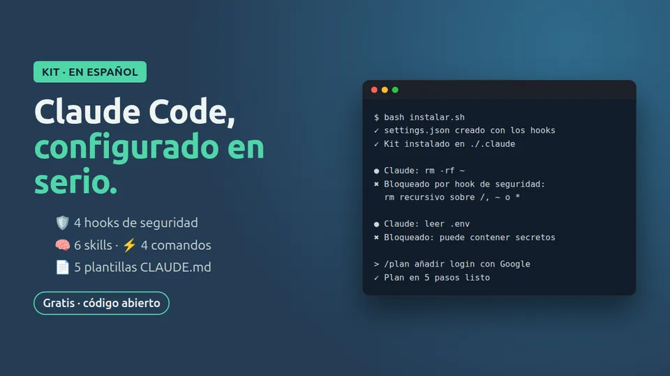

Nuevo Gratis
Kit Claude Code en Español
- hooks/: bloquea rm -rf, git push --force, curl | sh y la lectura de .env o llaves SSH
- skills/: revisión de código y commits convencionales
- comandos/plan.md: el comando /plan
- plantillas-claude-md/: Node/TypeScript y Python